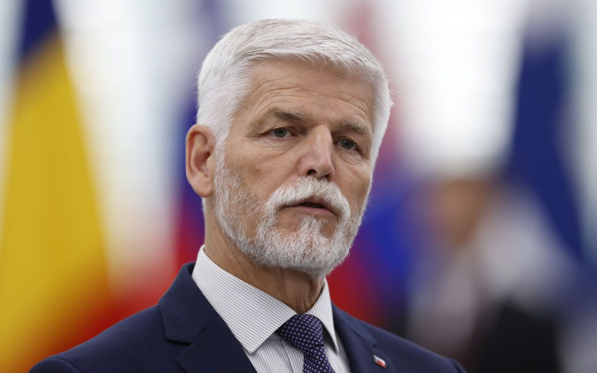

Перша новина
Президент Чехії зробив важливу заяву про снаряди для ЗСУ
Президент Петр Павел заявив, що Чехія шукає боєприпаси та озброєння для я
кнайшвидшого постачання Україні по всьому світу, зокрема, є можливість постачання
500 тис. снарядів калібру 155 мм і 300 тис. снарядів калібру 122 мм із
третіх країн протягом тижнів – у разі отримання необхідного фінансування.

Друга новина
У Чорнобильському заповіднику до фотооб'єктиву потрапив найбільший пернатий хижак Полісся
У Чорнобильському заповіднику на Київщині до фотооб'єктиву потрапив найбільший пернатий хижак Полісся –
орлан-білохвост.
Про це йдеться у повідомленні Чорнобильського радіаційно-екологічного біосферного заповідника.

Новина 3
Шольц прокоментував непостачання Німеччиною ракет Taurus для України
Канцлеру Німеччини Олафу Шольцу на Мюнхенській безпековій конференції не сподобалося запитання про те,
чому країна досі не постачає ракети Taurus нашій державі. Він наголосив,
що Німеччина витрачає на зброю для України найбільше коштів після США.
Новина 4
В Україні 17 лютого не працюватиме "ПриватБанк": названо причину
Застосунок і сайт “ПриватБанку” не працюватимуть вночі 17 лютого. Це пов’язано з регламентними роботами процесингу.
Новина 5
Низка потягів “Укрзалізниці” затримується через проблеми на кордоні з Польщею
У п'ятницю, 16 лютого, українські поїзди, які здійснюють рейси до польського міста Перемишля та у зворотному напрямку, можуть мати затримки у русі та зміни в розкладі.